A straight wire of mass 200 g and length 1.5 m carries a current of 2 A. It is suspended in mid-air by a uniform horizontal magnetic field B (Fig. 4.3). What is the magnitude of the magnetic field?
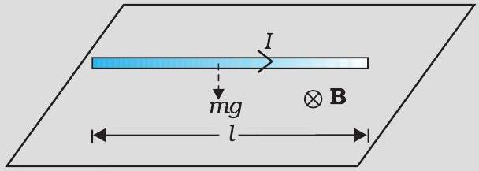
If the magnetic field is parallel to the positive y-axis and the charged particle is moving along the positive x-axis (Fig. 4.4), which way would the Lorentz force be for (a) an electron (negative charge), (b) a proton (positive charge).
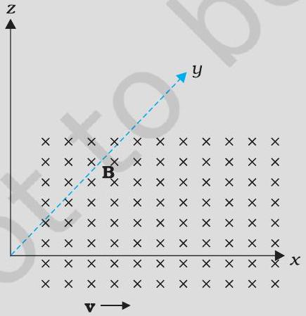
Part (a)
an electron (negative charge)
Part (b)
a proton (positive charge)
What is the radius of the path of an electron (mass 9 × 10‑31 kg and charge 1.6 × 10‑19 C) moving at a speed of 3 × 107 m / s in a magnetic field of 6 × 10‑4 T perpendicular to it? What is its frequency? Calculate its energy in keV. (1 eV = 1.6 × 10‑19 J).
An element Δ l = Δ x î is placed at the origin and carries a large current I = 10 A (Fig. 4.8). What is the magnetic field on the y axis at a distance of 0.5 m. Δ x = 1 cm.
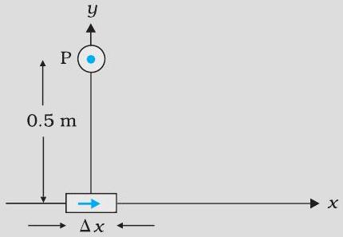
A straight wire carrying a current of 12 A is bent into a semi-circular arc of radius 2.0 cm as shown in Fig. 4.11
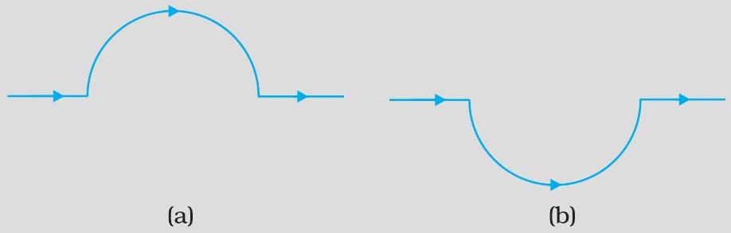
Part (a)
What is the magnetic field due to the straight segments?
Part (b)
In what way the contribution to B from the semicircle differs from that of a circular loop and in what way does it resemble?
Part (c)
Would your answer be different if the wire were bent into a semi-circular arc of the same radius but in the opposite way as shown in Fig. 4.11(b)?
Consider a tightly wound 100 turn coil of radius 10 cm, carrying a current of 1 A. What is the magnitude of the magnetic field at the centre of the coil?
Figure 4.13 shows a long straight wire of a circular cross-section (radius a) carrying steady current I. The current I is uniformly distributed across this cross-section. Calculate the magnetic field in the region r<a and r>a.
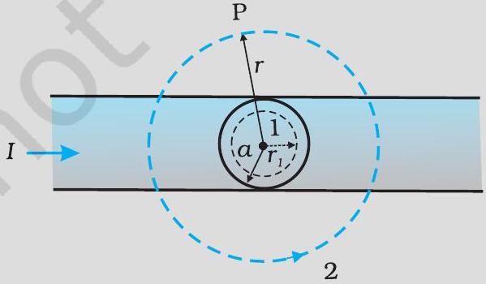
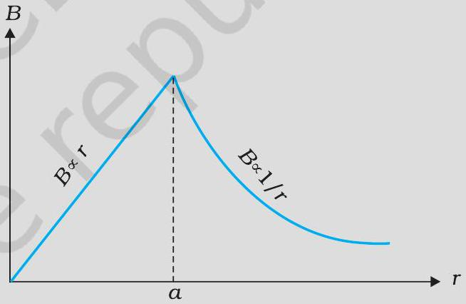
A solenoid of length 0.5 m has a radius of 1 cm and is made up of 500 turns. It carries a current of 5 A. What is the magnitude of the magnetic field inside the solenoid?
The horizontal component of the earth's magnetic field at a certain place is 3.0 × 10‑5 T and the direction of the field is from the geographic south to the geographic north. A very long straight conductor is carrying a steady current of 1A. What is the force per unit length on it when it is placed on a horizontal table and the direction of the current is (a) east to west; (b) south to north?
Part (a)
east to west
Part (b)
south to north
A 100 turn closely wound circular coil of radius 10 cm carries a current of 3.2 A. The moment of inertia of the coil is 0.1 kg m2.
Part (a)
What is the field at the centre of the coil?
Part (b)
What is the magnetic moment of this coil?
Part (c)
What are the magnitudes of the torques on the coil in the initial and final position?
Part (d)
What is the angular speed acquired by the coil when it has rotated by 90°? The moment of inertia of the coil is 0.1 kg m2.
If the wire is flexible, why does it change to a circular shape?
Part (a)
A current-carrying circular loop lies on a smooth horizontal plane. Can a uniform magnetic field be set up in such a manner that the loop turns around itself (i.e., turns about the vertical axis).
Part (b)
A current-carrying circular loop is located in a uniform external magnetic field. If the loop is free to turn, what is its orientation of stable equilibrium? Show that in this orientation, the flux of the total field (external field + field produced by the loop) is maximum.
Part (c)
A loop of irregular shape carrying current is located in an external magnetic field. If the wire is flexible, why does it change to a circular shape?
In the circuit (Fig. 4.23) the current is to be measured. What is the value of the current if the ammeter shown (a) is a galvanometer with a resistance RG = 60.00 Ω; (b) is a galvanometer described in (a) but converted to an ammeter by a shunt resistance rs = 0.02 Ω; (c) is an ideal ammeter with zero resistance?
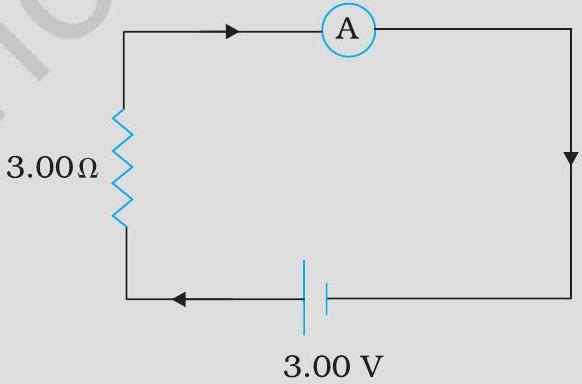
Part (a)
is a galvanometer with a resistance RG = 60.00 Ω
Part (b)
is a galvanometer described in (a) but converted to an ammeter by a shunt resistance rs = 0.02 Ω
Part (c)
is an ideal ammeter with zero resistance
A circular coil of wire consisting of 100 turns, each of radius 8.0 cm carries a current of 0.40 A. What is the magnitude of the magnetic field B at the centre of the coil?
A long straight wire carries a current of 35 A. What is the magnitude of the field B at a point 20 cm from the wire?
A long straight wire in the horizontal plane carries a current of 50 A in north to south direction. Give the magnitude and direction of B at a point 2.5 m east of the wire.
A horizontal overhead power line carries a current of 90 A in east to west direction. What is the magnitude and direction of the magnetic field due to the current 1.5 m below the line?
What is the magnitude of magnetic force per unit length on a wire carrying a current of 8 A and making an angle of 30° with the direction of a uniform magnetic field of 0.15 T?
A 3.0 cm wire carrying a current of 10 A is placed inside a solenoid perpendicular to its axis. The magnetic field inside the solenoid is given to be 0.27 T. What is the magnetic force on the wire?
Two long and parallel straight wires A and B carrying currents of 8.0 A and 5.0 A in the same direction are separated by a distance of 4.0 cm. Estimate the force on a 10 cm section of wire A.
A closely wound solenoid 80 cm long has 5 layers of windings of 400 turns each. The diameter of the solenoid is 1.8 cm. If the current carried is 8.0 A, estimate the magnitude of B inside the solenoid near its centre.
A square coil of side 10 cm consists of 20 turns and carries a current of 12 A. The coil is suspended vertically and the normal to the plane of the coil makes an angle of 30° with the direction of a uniform horizontal magnetic field of magnitude 0.80 T. What is the magnitude of torque experienced by the coil?
Two moving coil meters, M1 and M2 have the following particulars:
In a chamber, a uniform magnetic field of 6.5 G(1 G = 10‑4 T) is maintained. An electron is shot into the field with a speed of 4.8 × 106 m s‑1 normal to the field. Explain why the path of the electron is a circle. Determine the radius of the circular orbit. ( e = 1.5 × 10‑19 C, me = 9.1 × 10‑31 kg )
In Exercise 4.11 obtain the frequency of revolution of the electron in its circular orbit. Does the answer depend on the speed of the electron? Explain.
(a) A circular coil of 30 turns and radius 8.0 cm carrying a current of 6.0 A is suspended vertically in a uniform horizontal magnetic field of magnitude 1.0 T. The field lines make an angle of 60° with the normal of the coil. Calculate the magnitude of the counter torque that must be applied to prevent the coil from turning. (b) Would your answer change, if the circular coil in (a) were replaced by a planar coil of some irregular shape that encloses the same area? (All other particulars are also unaltered.)
Two concentric circular coils X and Y of radii 16 cm and 10 cm, respectively, lie in the same vertical plane containing the north to south direction. Coil X has 20 turns and carries a current of 16 A; coil Y has 25 turns and carries a current of 18 A. The sense of the current in X is anticlockwise, and clockwise in Y, for an observer looking at the coils facing west. Give the magnitude and direction of the net magnetic field due to the coils at their centre.
A magnetic field of 100 G(1 G = 10‑4 T) is required which is uniform in a region of linear dimension about 10 cm and area of cross-section about 10‑3 m2. The maximum current-carrying capacity of a given coil of wire is 15 A and the number of turns per unit length that can be wound round a core is at most 1000 turns m‑1. Suggest some appropriate design particulars of a solenoid for the required purpose. Assume the core is not ferromagnetic
For a circular coil of radius R and N turns carrying current I, the magnitude of the magnetic field at a point on its axis at a distance x from its centre is given by,
A toroid has a core (non-ferromagnetic) of inner radius 25 cm and outer radius 26 cm, around which 3500 turns of a wire are wound. If the current in the wire is 11 A, what is the magnetic field (a) outside the toroid, (b) inside the core of the toroid, and (c) in the empty space surrounded by the toroid.
Answer the following questions: A magnetic field that varies in magnitude from point to point but has a constant direction (east to west) is set up in a chamber. A charged particle enters the chamber and travels undeflected along a straight path with constant speed. What can you say about the initial velocity of the particle? A charged particle enters an environment of a strong and non-uniform magnetic field varying from point to point both in magnitude and direction, and comes out of it following a complicated trajectory. Would its final speed equal the initial speed if it suffered no collisions with the environment? An electron travelling west to east enters a chamber having a uniform electrostatic field in north to south direction. Specify the direction in which a uniform magnetic field should be set up to prevent the electron from deflecting from its straight line path.
An electron emitted by a heated cathode and accelerated through a potential difference of 2.0 kV, enters a region with uniform magnetic field of 0.15 T. Determine the trajectory of the electron if the field (a) is transverse to its initial velocity, (b) makes an angle of 30° with the initial velocity.
A magnetic field set up using Helmholtz coils (described in Exercise 4.16) is uniform in a small region and has a magnitude of 0.75 T. In the same region, a uniform electrostatic field is maintained in a direction normal to the common axis of the coils. A narrow beam of (single species) charged particles all accelerated through 15 kV enters this region in a direction perpendicular to both the axis of the coils and the electrostatic field. If the beam remains undeflected when the electrostatic field is 9.0 × 10‑5 V m‑1, make a simple guess as to what the beam contains. Why is the answer not unique?
A straight horizontal conducting rod of length 0.45 m and mass 60 g is suspended by two vertical wires at its ends. A current of 5.0 A is set up in the rod through the wires. What magnetic field should be set up normal to the conductor in order that the tension in the wires is zero? What will be the total tension in the wires if the direction of current is reversed keeping the magnetic field same as before? (Ignore the mass of the wires.) g = 9.8 m s‑2.
The wires which connect the battery of an automobile to its starting motor carry a current of 300 A (for a short time). What is the force per unit length between the wires if they are 70 cm long and 1.5 cm apart? Is the force attractive or repulsive?
A uniform magnetic field of 1.5 T exists in a cylindrical region of radius 10.0 cm, its direction parallel to the axis along east to west. A wire carrying current of 7.0 A in the north to south direction passes through this region. What is the magnitude and direction of the force on the wire if, the wire intersects the axis, the wire is turned from N-S to northeast-northwest direction, the wire in the N-S direction is lowered from the axis by a distance of 6.0 cm?
A uniform magnetic field of 3000 G is established along the positive z-direction. A rectangular loop of sides 10 cm and 5 cm carries a current of 12 A. What is the torque on the loop in the different cases shown in Fig. 4.28? What is the force on each case? Which case corresponds to stable equilibrium?
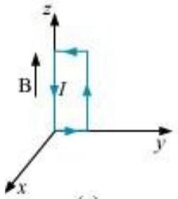
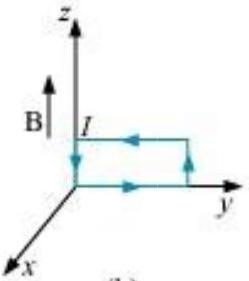
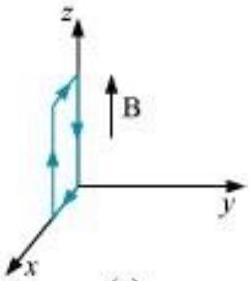
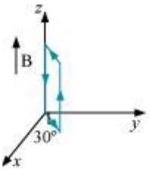
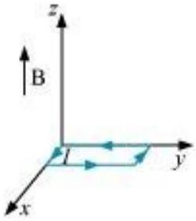
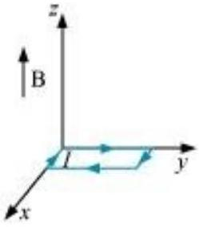
A circular coil of 20 turns and radius 10 cm is placed in a uniform magnetic field of 0.10 T normal to the plane of the coil. If the current in the coil is 5.0 A, what is the total torque on the coil, total force on the coil, average force on each electron in the coil due to the magnetic field? (The coil is made of copper wire of cross-sectional area 10‑5 m2, and the free electron density in copper is given to be about 1029 m‑3.)
A solenoid 60 cm long and of radius 4.0 cm has 3 layers of windings of 300 turns each. A 2.0 cm long wire of mass 2.5 g lies inside the solenoid (near its centre) normal to its axis; both the wire and the axis of the solenoid are in the horizontal plane. The wire is connected through two leads parallel to the axis of the solenoid to an external battery which supplies a current of 6.0 A in the wire. What value of current (with appropriate sense of circulation) in the windings of the solenoid can support the weight of the wire? g = 9.8 m s‑2
A galvanometer coil has a resistance of 12 Ω and the metre shows full scale deflection for a current of 3 mA. How will you convert the metre into a voltmeter of range 0 to 18 V?
A galvanometer coil has a resistance of 15 Ω and the metre shows full scale deflection for a current of 4 mA. How will you convert the metre into an ammeter of range 0 to 6 A?